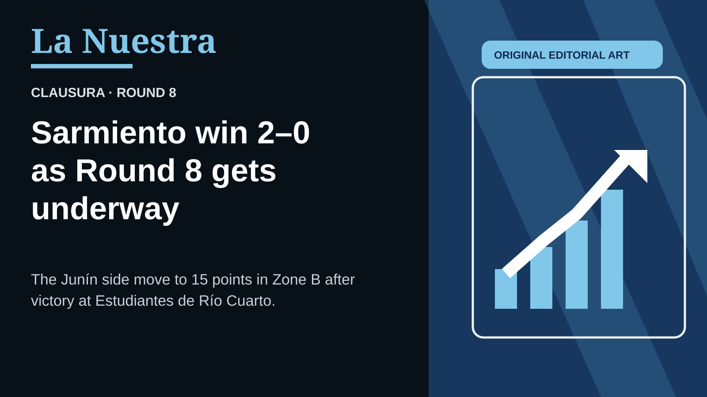
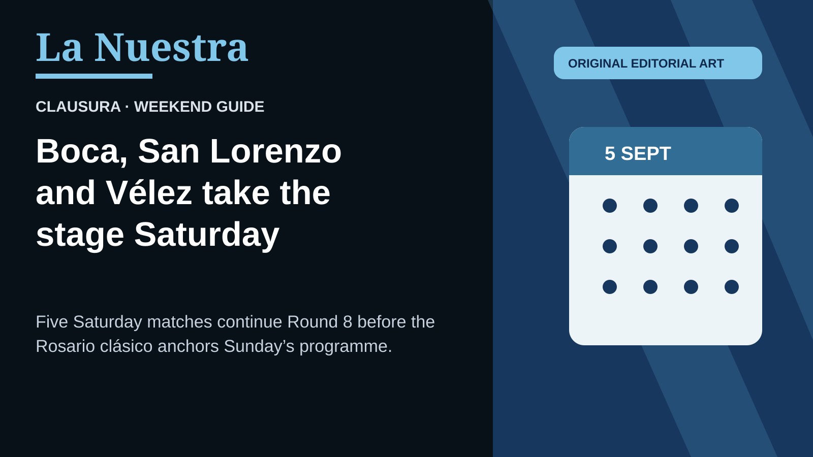

{kind=link}
Gimnasia Mendoza · Zone A leaders
Lencioni double sends the Lobo top
Esteban Fernández opened the scoring and Facundo Lencioni struck twice as Gimnasia Mendoza won 3–0 at Independiente to reach 15 points.
Independent coverage of Argentina’s game, from the Clausura to the selección.
Read BraGinga →
Clausura · Round 8 · Saturday finals
A 90+3 equalizer denied Boca, Vélez beat Estudiantes, Gimnasia LP and San Lorenzo won, and Aldosivi finally broke through.
Archive photograph: Gonzabar77 / Wikimedia Commons, CC0 1.0.

Clausura · Round 8
Sarmiento moved to 15 points in Zone B after beating Estudiantes de Río Cuarto. Friday’s other two matches finished 1–1.
Original editorial illustration; no third-party photo assets.

Clausura · Weekend guide
Five Saturday matches continue Round 8, including Gimnasia Mendoza–Boca, San Lorenzo–Talleres and Vélez–Estudiantes.
Original editorial illustration; no third-party photo assets.
Copa Argentina · Confirmed final
Boca Juniors beat Vélez Sarsfield 4–3 on penalties after a 0–0 draw in Córdoba, advancing to a Copa Argentina quarter-final against Racing.
Argentines abroad · Confirmed transfer
The 20-year-old Argentine joins from Manchester City for 2026–27, with a purchase option.
Selección · Announced tribute
AFA’s announced tribute calls for a minute of applause ten minutes into the next round’s matches.
Argentines abroad · Confirmed transfer
The Argentina midfielder’s five-year deal is confirmed. He reunites with coach Enzo Maresca after leaving Chelsea.
San Lorenzo · Manager change
The club confirmed the end of his contract after Monday’s loss at Instituto. Football co-ordinator Walter Perazzo took Tuesday training; no replacement has been named.
Argentines abroad · Confirmed transfer
The 19-year-old Argentine forward signed a five-year contract through 2031. Flamengo assigned him No. 30 after his move from River Plate.
Clausura · Monday finals
Giuliano Cerato’s goal beat San Lorenzo; Héctor David Martínez lifted Defensa over Platense. Two other matches ended scoreless.
Selección · End of an era
Lionel Messi has retired from international football after more than two decades with Argentina. The captain says the moment has come; the selección now has to become something else.
Gimnasia Mendoza · Zone A leaders
Esteban Fernández opened the scoring and Facundo Lencioni struck twice as Gimnasia Mendoza won 3–0 at Independiente to reach 15 points.
Independiente Rivadavia · Zone B
Independiente Rivadavia won 3–1 to climb to 11 points. Racing remain on five after seven matches.
Argentinos Juniors · Zone B
Argentinos recovered from Andrés Vombergar’s opener to beat Aldosivi 2–1 and reach 16 points from seven matches.
Argentina abroad · Market watch
Atlético’s directors say there will be no negotiation with Barcelona. The statement closes that destination, not every possible future transfer.
Argentines abroad · Manager watch
Guillermo Hoyos remains in interim control until the former Argentina international receives authorization and arrives with his staff.
Clausura · Saturday finals
Gimnasia won 2–1 after Jaminton Campaz had levelled in the 86th minute. Two late Saturday matches finished goalless.
Clausura · Zone A leaders
Tomás González headed Riestra in front before a Facundo Miño own goal earned Vélez the point.
Clausura · Friday results
Boca moved to 10 points in Zone A with a 90+3 winner; Unión’s 4–1 interzonal win left Sarmiento on 12.
Clausura Round 8 · Friday finals
All three Friday matches are final. Sarmiento rise to second in Zone B.
Clausura Round 8 · Saturday finals
All five Saturday matches are final. Sunday’s programme remains upcoming.
Sunday, 6 September · Scheduled
No in-progress scores will be posted.
Copa Argentina · 2 September · Final
Álvaro Montero saved twice in the shootout. Boca advance to face Racing in the quarter-finals.
| Day | Match | Status / ART |
|---|---|---|
| Fri. | Unión 4–1 Sarmiento; Boca 1–0 Lanús | Final; Final |
| Sat. | Riestra 1–1 Vélez; Rosario Central 1–2 Gimnasia; Huracán 1–1 Estudiantes RC; Talleres 0–0 Central Córdoba; Atlético Tucumán 0–0 Belgrano | Final; Final; Final; Final; Final |
| Sun. | Banfield 2–3 River; Argentinos 2–1 Aldosivi | Final; Final |
| Sun. | Independiente 0–3 Gimnasia Mendoza; Independiente Rivadavia 3–1 Racing | Final; Final |
| Mon. | Defensa 1–0 Platense; Estudiantes 0–0 Newell’s; Tigre 0–0 Barracas; Instituto 1–0 San Lorenzo | Final; Final; Final; Final |
Sources: Liga Profesional and TyC Sports. La Nuestra never publishes an in-progress score.
| # | Club | Pts | P |
|---|---|---|---|
| 1 | Gimnasia Mendoza | 16 | 8 |
| 2 | Vélez | 16 | 8 |
| 3 | Instituto | 16 | 7 |
| 4 | Defensa | 14 | 7 |
| 5 | Newell’s | 11 | 7 |
| 6 | Boca | 11 | 8 |
| 7 | Unión | 10 | 7 |
| 8 | Independiente | 10 | 7 |
| 9 | San Lorenzo | 10 | 8 |
| 10 | Riestra | 9 | 8 |
| 11 | Platense | 9 | 8 |
| 12 | Lanús | 7 | 7 |
| 13 | Estudiantes | 7 | 8 |
| 14 | Central Córdoba | 7 | 7 |
| 15 | Talleres | 5 | 8 |
| # | Club | Pts | P |
|---|---|---|---|
| 1 | Argentinos | 16 | 7 |
| 2 | Sarmiento | 15 | 8 |
| 3 | Gimnasia LP | 15 | 8 |
| 4 | Belgrano | 12 | 8 |
| 5 | Tigre | 12 | 8 |
| 6 | Ind. Rivadavia | 11 | 7 |
| 7 | Rosario Central | 11 | 7 |
| 8 | Atlético Tucumán | 10 | 7 |
| 9 | Huracán | 10 | 8 |
| 10 | Barracas | 10 | 7 |
| 11 | River | 7 | 7 |
| 12 | Banfield | 7 | 8 |
| 13 | Estudiantes RC | 6 | 8 |
| 14 | Aldosivi | 5 | 8 |
| 15 | Racing | 5 | 7 |
The continuing guide to clubs, grounds and identities beyond the capital.